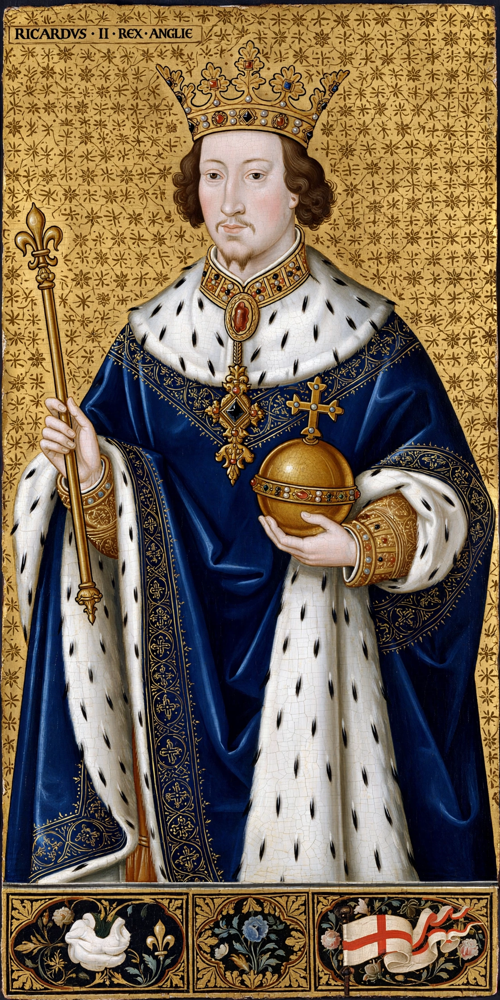

Richard II (6 January 1367 – c. 14 February 1400), also known as Richard of Bordeaux, was King of England from 1377 until he was deposed in 1399. The son of Edward the Black Prince and Joan of Kent, he succeeded his grandfather Edward III at the age of ten. His reign was marked by the Peasants' Revolt, conflict with the Lords Appellant, and an increasingly absolutist style that ended with his overthrow by his cousin Henry Bolingbroke (Henry IV).
 | |
| Reign | 21 June 1377 – 29 September 1399 |
|---|---|
| Coronation | 16 July 1377 |
| Predecessor | Edward III |
| Successor | Henry IV |
| Born | 6 January 1367, Bordeaux, Aquitaine |
| Died | c. 14 February 1400, Pontefract Castle, Yorkshire |
| Spouses | Anne of Bohemia; Isabella of Valois |
Richard's minority was governed by councils dominated by his uncle John of Gaunt. In 1381 the fourteen-year-old king famously faced down the rebels of the Peasants' Revolt at Smithfield, where their leader Wat Tyler was killed; the revolt was suppressed and its concessions revoked. In 1382 Richard married Anne of Bohemia, whose court helped make his reign a centre of chivalric culture and patronage.
Resentment at Richard's favourites led the Lords Appellant in 1388 to purge his court in the "Merciless Parliament". Richard gradually recovered: in 1389 he declared himself of age, ruled more moderately for several years, and concluded a truce with France. After Anne's death in 1394 his rule hardened; in 1397 he arrested the leading Appellants, exiling Henry Bolingbroke and Thomas Mowbray after their quarrel in 1398.
When John of Gaunt died in 1399, Richard seized the Lancastrian inheritance, disinheriting Bolingbroke. Henry invaded while Richard was in Ireland, gathered support, and forced the king's surrender. Richard abdicated (or was deposed) in September 1399 and was imprisoned in Pontefract Castle, where he died the following February, probably starved. His deposition set a precedent that haunted English kingship through the Wars of the Roses.
Richard is remembered through Shakespeare's play Richard II, the Wilton Diptych portrait, and his rebuilding of Westminster Hall. Historians debate whether he was a tyrant, a would-be absolutist, or a king destroyed by faction.
From Wikipedia, the free encyclopedia.